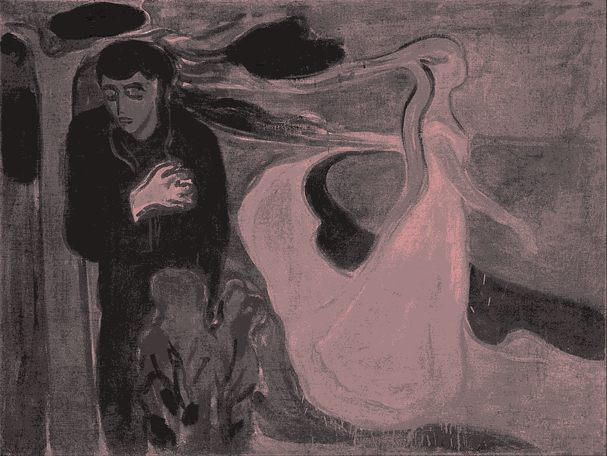

Introduction: Who is the Borderline "F.P."?
In recent years, individuals with B.P.D. lacking close relationships in offline spaces have turned towards social media and internet message boards to seek community and emotional support. Specialized online forums, such as r/BPD on reddit.com, allow borderlines and their loved ones to share their unique experiences, and build a supportive community.
Like other niche online spaces, these forums have developed their own cultures, conventions, and language over time. A term popularized in recent years is the borderline "favorite person", or "F.P.". One anonymous Quora user describes their "F.P." relationship as follows:
"I'm like a dog who destroys the house when she's left at home, but then acts really happy when the owner comes home and pretends nothing happened… I will text my FP every morning when I wake up saying "good morning xx," and if they haven't replied within five minutes I automatically assume they either hate me or I have annoyed them. If I were to think about it logically, I would probably tell myself they're probably still asleep — but when it comes to having an FP all rational thinking goes out of the window."
.gif)
While no standardized criteria define the F.P. relationship, the term broadly refers to a friend or romantic partner with whom the borderline person is deeply and maladaptively infatuated. The borderline person relies upon their F.P. for constant attention, affection, and reassurance, and experiences excruciating emotional distress when the F.P. cannot reciprocate their intensity.
The Borderline Favorite Person
Edvard Munch, Separation (1896).
